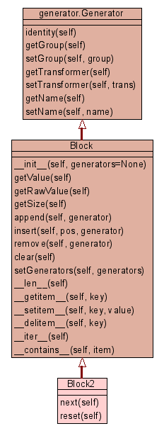

|
Peach ::
Generators ::
block ::
Block2 ::
Class Block2
|
|
Class Block2
source code

Specialized type of Block that will call next() on each generator.
Use this type of block with GeneratorLists.
Example:
>>> gen = GeneratorList(None, [
... Block2([
... Static('Hello'),
... Static(' '),
... Repeater(None, Static('World'), 1, 2)
... ])
... ])
>>> print gen.getValue()
Hello World
>>> gen.next()
>>> print gen.getValue()
Hello WorldWorld
|
|
next(self)
Note: We arn't going to next on any of the sub generators. |
source code
|
|
|
|
reset(self)
Even though we don't propogate .next calls we should reset things. |
source code
|
|
|
Inherited from Block:
__contains__,
__delitem__,
__getitem__,
__init__,
__iter__,
__len__,
__setitem__,
append,
clear,
getRawValue,
getSize,
getValue,
insert,
remove,
setGenerators
Inherited from generator.Generator:
getGroup,
getName,
getTransformer,
identity,
setGroup,
setName,
setTransformer
|
|
Note: We arn't going to next on any of the sub generators. This is
left to the group or whatever todo.
- Overrides:
generator.Generator.next
- (inherited documentation)
|
|
Even though we don't propogate .next calls we should reset things.
- Overrides:
generator.Generator.reset
- (inherited documentation)
|